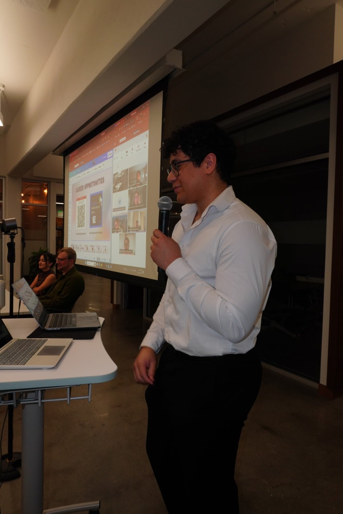
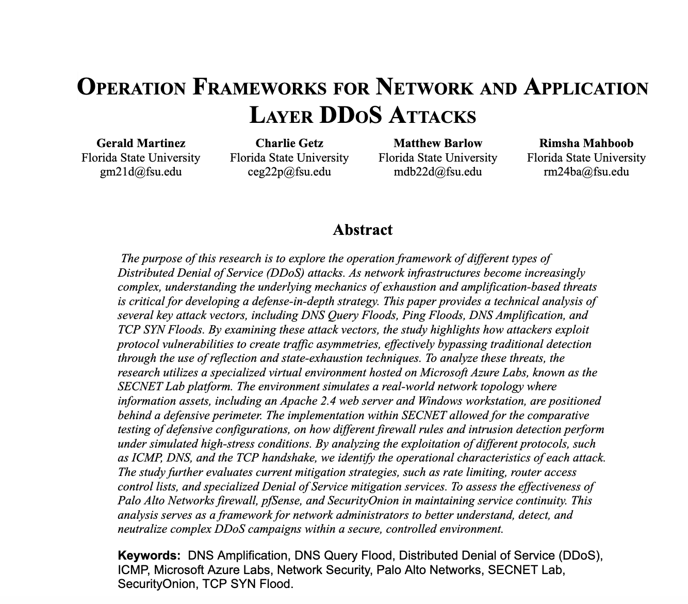

Portfolio

QuantBot Vision
An autonomous AI cryptocurrency trading agent featuring a mobile-optimized dashboard and real-time exchange integrations.
Role: Lead Developer
Challenge: Restructuring the architecture roadmap to prioritize a highly scalable Docker-based database environment over local file storage, ensuring better risk management.
Career Prep: Mastering containerization and API integrations directly prepares me for engineering robust, secure financial cloud architectures.

Tech Industry Campus Outreach
A collaborative initiative managed by a student team to connect prominent tech companies with Florida students for on-campus masterclasses.
Role: Project Manager & Co Lead
Challenge: Co led a peer group to delegate tasks efficiently, while communicating across diverse external groups to align corporate partners with university stakeholders.
Career Prep: Directing a team and managing stakeholder expectations proved my ability to work productively with people, ensuring I can collaborate effectively to bridge the gap between technical teams and leadership.

Serverless Financial Chatbot
An AI-powered financial Q&A chatbot built entirely on cloud infrastructure to process and accurately answer complex user queries.
Role: Cloud Architect / Developer
Challenge: Troubleshooting deployment permissions and securely routing data through serverless functions to the large language model API.
Career Prep: Building this deepened my innovative application of technology, giving me hands-on experience securing serverless enterprise environments.

Network DDoS Simulation
A team-based research project conducting controlled simulations of real-world distributed denial-of-service attacks to test network resilience.
Role: Security Analyst (Research Group)
Challenge: Synchronizing our group's efforts in real-time to safely contain the simulation, requiring precise communication to capture traffic data without overlapping tasks.
Career Prep: Executing a coordinated attack simulation with peers sharpened my collaborative problem-solving, perfectly mirroring the team-based environment of a professional Security Operations Center (SOC).